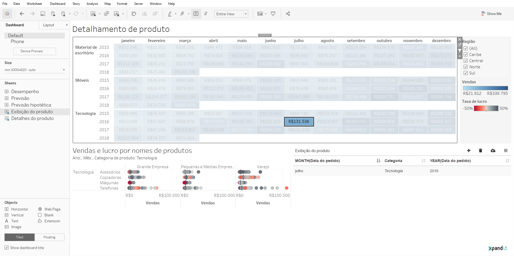
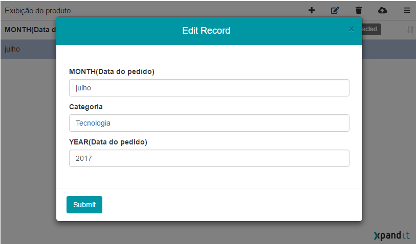
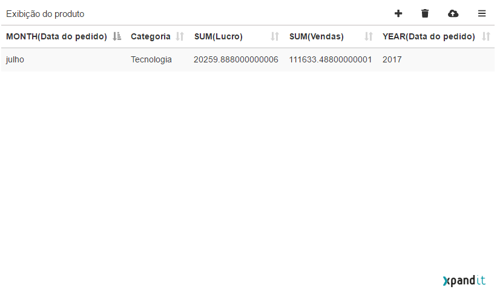
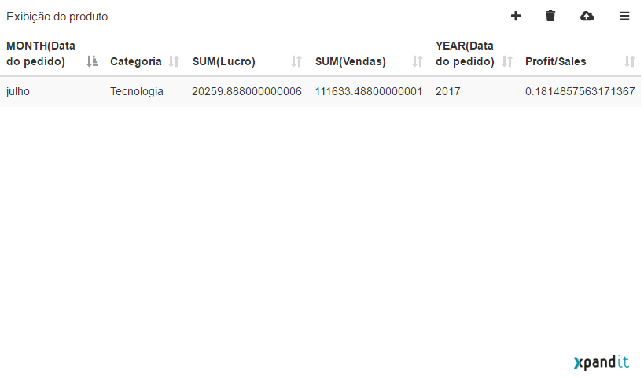

Testing Step #1: Add Extension to Dashboard
With the Product dashboard selected in Tableau, click and drag on the new “Extension” object and choose where on the dashboard you want to add the extension. Alternatively, double-click the “Extension” object and Tableau will automatically add it to your dashboard.
Tableau will prompt you to choose what extension you want to use. Navigate to where you saved “XpWriteBack.trex and select it.
Testing Step #2: Configure Extension

Next, you will be automatically prompted to configure the extension. If you don’t see the above screen, click on the downward facing triangle that can be found in the corner of the extension dashboard zone:
Then select “Configure”. This should get the first screen above to appear.
There are four things to configure:
- “Select the worksheet” – Select the worksheet that you will use to extract data from;
- “Extract all worksheet data” – If this option is selected, all the data is extracted from the worksheet. Otherwise only the data when the mark is selected;
- “Endpoint URL” – The endpoint where to send the data, if you configured the Google Spreadsheet, you add the https://scripts.google.com/... in here.
- “Select the Spreadsheet” – This is optional, if using Google Spreadsheet, you can specify the sheet name where the data will be stored. By default, it is stored in a sheet called Tableau;
- “Add Column” – This is optional; you can add new columns to see in your data;
After adding values to point one and two, the “Submit” button should be enabled and you can click it to start using the extension;
Testing Step #3: Add records to the extension
Select data in worksheet and you should see it in the extension in table format.
Testing Step #4: Create new records
On the top right corner, you should see four buttons.
The first button with a “plus” allows you to create new records and a them to the table.
Click on the button, and you should be prompted with a window with the same fields as in the table. Add values to those fields and click “Submit” to see the data in the table.
Testing Step #5: Add new columns
Open the “Configure” menu like explained above and add columns in there. When finished, click the “Submit” button to see your new columns in the table.
Testing Step #6: Edit records
Select any of the records in the table by clicking over it. If one or more records are selected, you should see in the top right corner, five buttons instead of four.
The second button allows you to edit the record selected.
Click the button and you will be prompted with a new window to edit your record.
When you finish editing what you want, click the “Submit” and your changes should be reflected in the table.
Testing Step #7: Remove record
You can also remove a record by using the button highlighted
If no records are selected all the records in the table will be removed. Otherwise only the selected record is removed.
Testing Step #8: Write Back the Data
By using the highlighted button, you can send the data to the endpoint you defined. After that just check in the spreadsheet and you should be able to see the data you sent.
Testing Step #9: Write back only selected records
Go to the configuration menu.
In the "DataTable" options select the option "Send only selected rows".
When sending the data, only the selected records will be sent.
Testing Step #10: View Measures
Go to the configuration menu.
In the "DataTable" options select the option "Display Measures".
The measures in the worksheet will be displayed in the extension table
Testing Step #11: Default Values
In the Configuration menu, when you add new columns, you can set a default value for them
This allows the new columns to have default values, instead of needing to insert them one by one
It also allows the user to use column already available in the table to create new values
Example:
You can see two measures. SUM(Lucro) and SUM(Vendas) this is SUM(Profit) and SUM(Sales), respectively.
In the cofiguration menu you can add a new column using the values of this column, for that just use the column name between parentheses.
This will make the new column have a calculated value:
This calculations are made using the extension, so do not try to use Tableau formulas.
Testing Step #12: Write-back fields
Go to the configuration menu.
In the "DataTable" options go to "Write-back fields".
The fields checked in where will be sent to the endpoint defined, when writing back data. The unchecked fields, will be ignored.
Testing Step #13: Refresh Datasources
Open the sidebar menu
In the "Datasource Refresh" check the option:
- Refresh on Data Sent to have the worksheet data sources refreshed every time you send data
- Auto Refresh every x seconds to have the worksheet data sources refreshed every x seconds